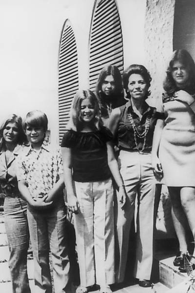
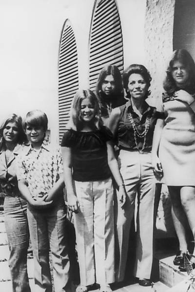

Amadeus (1984)
"Amadeus" é um drama biográfico que explora a vida do compositor Wolfgang Amadeus Mozart e sua relação tumultuada com o colega compositor Antonio Salieri. Ambientado no século XVIII, o filme retrata a ascensão de Mozart à fama e o ciúme que Salieri sente de seu talento extraordinário. A narrativa é contada através da perspectiva de Salieri, que se vê em conflito entre sua admiração e inveja pelo gênio musical de Mozart.
"Amadeus" é uma obra-prima que mergulha na complexa relação entre Wolfgang Amadeus Mozart e Antonio Salieri, explorando temas de genialidade, inveja e a luta pela fama. A direção de Milos Forman é excepcional, criando uma atmosfera rica e vibrante da Viena do século XVIII. F. Murray Abraham brilha como Salieri, transmitindo sua profunda admiração e ciúme em relação ao talento inigualável de Mozart, interpretado de forma exuberante por Tom Hulce. A trilha sonora, repleta das composições de Mozart, não apenas enriquece a narrativa, mas também se torna um personagem à parte, intensificando as emoções da trama. No entanto, a dramatização pode simplificar a complexidade histórica, apresentando uma visão mais romântica do que realmente ocorreu. Apesar disso, "Amadeus" é uma reflexão poderosa sobre a luta interna entre a genialidade e a mediocridade, deixando uma marca duradoura na história do cinema.
Resident Evil:Bem-vindo a Raccoon City
Resident Evil: Bem-vindo a Raccoon City é um reboot da franquia de terror que se passa em 1998, quando a cidade de Raccoon City se torna um deserto urbano após a queda da Umbrella Corporation. Um grupo de sobreviventes, incluindo Claire Redfield e Leon S. Kennedy, enfrenta hordas de zumbis e monstros criados pela empresa enquanto tentam desvendar os segredos que levaram à catástrofe
"Resident Evil: Bem-vindo a Raccoon City" gerou opiniões mistas entre críticos e espectadores. Enquanto alguns apreciaram a fidelidade ao material original dos jogos e a atmosfera de terror, muitos criticaram o desenvolvimento superficial dos personagens e a narrativa apressada, que pode deixar o público confuso. Embora os efeitos visuais e as representações de criaturas tenham sido elogiados, a recepção geral variou, com fãs da franquia divididos sobre se o filme conseguiu capturar a essência do que tornava os jogos impactantes.
Searching for Sugar Man (2012)
"Searching for Sugar Man" é um documentário que narra a busca de dois fãs sul-africanos por Sixto Rodriguez, um músico americano que, após o fracasso de seu álbum nos anos 70, se tornou uma lenda no país sem saber. O filme revela a história de como sua música impactou a luta contra o apartheid e a surpreendente descoberta de seu destino.
"Searching for Sugar Man" é um documentário fascinante que combina música, mistério e a busca pela verdade. A narrativa envolvente revela a jornada de dois fãs em busca de Sixto Rodriguez, um artista que, apesar de seu talento, viveu na obscuridade. A direção de Malik Bendjelloul é habilidosa, equilibrando entrevistas e imagens de arquivo para criar uma atmosfera de descoberta. A música de Rodriguez, com letras poéticas e melódicas, ressoa profundamente, refletindo a luta e a esperança de uma geração. O filme não apenas celebra a redescoberta de um artista, mas também destaca o poder da música como forma de resistência e conexão. No entanto, a simplicidade da narrativa pode deixar algumas questões históricas em segundo plano. Apesar disso, "Searching for Sugar Man" é uma experiência emocionante e inspiradora que resgata a importância de vozes esquecidas.
 

Ainda Estou Aqui (2024)
Baseado na autobiografia de Marcelo Rubens Paiva, "Ainda Estou Aqui" narra a história comovente de Eunice Paiva, uma mulher resiliente que enfrenta o desaparecimento de seu marido, o deputado Rubens Paiva, durante a ditadura militar no Brasil. Entrelaçando momentos de dor, coragem e amor inabalável, o filme explora a luta de Eunice para proteger seus filhos e preservar a memória de sua família em meio à repressão e ao silêncio imposto pelo regime. Uma obra que transcende a história pessoal, revelando o impacto humano e social de um dos períodos mais sombrios do país.
Dirigido por Walter Salles, o filme é uma poderosa história sobre dor, coragem e memória durante a ditadura militar no Brasil. Fernanda Torres e Fernanda Montenegro brilham como Eunice Paiva, transmitindo emoção em cada cena. Com uma direção sensível e fotografia melancólica, "Ainda Estou Aqui" é um retrato tocante de resiliência e justiça, essencial para refletir sobre o impacto humano desse período histórico.
Divertida Mente 2 (2024)
Quando Riley (Kaitlyn Dias) chega a tão temida adolescência as já conhecidas, Alegria (Amy Poehler), Tristeza (Phyllis Smith), Raiva, Medo (Tony Hale) e Nojinho (Liza Lapira), que há muito tempo administram uma operação bem-sucedida, não têm certeza de como se sentir quando novos inquilinos chegam ao local, sendo um deles a tão temida Ansiedade (Maya Hawke).
"Divertida Mente 2" traz uma sequência encantadora e emocional, agora com Riley na adolescência. A Pixar introduz novas emoções, como Ansiedade e Vergonha, explorando de forma sensível os desafios dessa fase da vida. Com a mesma criatividade e profundidade do primeiro filme, a animação mistura humor e lições valiosas, mantendo o público cativado. Visualmente impressionante, é uma continuação que enriquece a história original e ressoa com todas as idades.